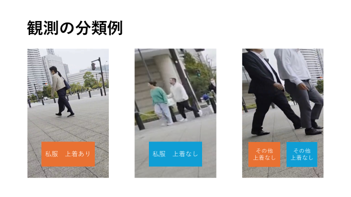

定点観察と路上観察
『テーマ：上着の有無について』
移動観察
・日時
・場所
・観察方法
後日、動画をもとに観察を行う
赤子は計測対象外とする
・観察対象
・男女
・上着（前が開くタイプ）の有無
・私服かそれ以外（スーツや制服）か

・観察条件
当日最高気温：17℃
最低気温：15℃
・観察結果
・上着を着ている率は男性よりも女性のほうが高かった
・男女ともに上着を着ている人のほうが着ていない人よりも多かった
・男女ともに上着を着ている人のほうが着ていない人よりも多かった
・上着ありの人の服装はスーツや制服よりも私服のほうが多かった
・スーツ、制服を着ている人は上着ありの割合が高かった
・スーツを着ている女性は全員上着を着用していた
・スーツを着ている女性は全員上着を着用していた
・考察
→観察日はそれまでよりも気温が低くなったことで着ている割合が多くなったと考えられる
・また、私服よりもスーツや制服で上着を着ている人の割合が多い理由は、スーツや制服が職場や学校での服装であり、上着を着ることでよりきちんとした印象となるからだと考えられる
まとめ
また、観察する項目を考えるにあたって、何に注目するかなど新たな視点で考えられた部分もあった。
今回は観察を行うことが目的のような部分があったので、目的のために観察を行う的なこともしてみたいとも感じた。